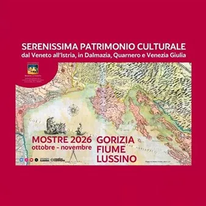

mar 13 ott
Il Patrimonio Culturale della Serenissima - Gorizia e le tradizioni di confine
Dal 13 ottobre al 4 novembre 2026 Gorizia, Fiume e Lussino ospiteranno le esposizioni realizzate nell’ambito del progetto “Serenissima Patrimonio Culturale dal Veneto all’Istria, in Dalmazia, Quarnero e Venezia Giulia”. Tre città, tre mostre per far conoscere e promuovere un…
 Indicazioni
Indicazioni
- Costi e prenotazioni
- Costo non indicato · Prenotazione non indicata
- Programma
- Programma da verificare. Apri la fonte ufficiale per orari e possibili aggiornamenti.
- In caso di maltempo
- Nessuna indicazione specifica pubblicata.
- Note
- Acquisito automaticamente dalla fonte.
L’EVENTO
Descrizione completa
Dal 13 ottobre al 4 novembre 2026 Gorizia, Fiume e Lussino ospiteranno le esposizioni realizzate nell’ambito del progetto “Serenissima Patrimonio Culturale dal Veneto all’Istria, in Dalmazia, Quarnero e Venezia Giulia”. Tre città, tre mostre per far conoscere e promuovere un unico patrimonio culturale.
Dopo le esposizioni del 2024 con i lavori delle scuole di Venezia, Vicenza, Treviso, Rovigno e Pola, le mostre rappresentano il punto di arrivo della seconda fase di un percorso transfrontaliero che ha coinvolto studenti, docenti, dirigenti scolastici, storici, ricercatori, comunità italiane, associazioni e università. Un lavoro corale che ha approfondito le tracce lasciate nei secoli dalla Repubblica di Venezia, mettendo in relazione storia, architettura, arte, gastronomia, etnologia, religione, mestieri e tradizioni popolari.
La prima mostra sarà inaugurata martedì 13 ottobre alle ore 11.00 all’ISISS D’Annunzio Fabiani di Gorizia e rimarrà aperta fino al 21 ottobre. Alla realizzazione dei contenuti hanno lavorato gli studenti della classe 4ATT del Tecnico Turistico e della 3ALS del Liceo Scientifico, coordinati dai docenti e dalla Dirigente Scolastica. Le ricerche hanno affrontato i rapporti tra Gorizia e il mondo veneziano attraverso diversi ambiti, dalla storia all’architettura, con un’attenzione particolare alla gastronomia. Tra i temi approfonditi figura il “bacalà alla cappuccina”, divenuto uno dei piatti caratteristici del “mangiar magro” e diffuso in numerosi conventi friulani.
Un altro percorso di ricerca è stato dedicato al Carnevale goriziano , nel quale gli studenti hanno individuato le tracce dell’influenza veneziana presenti nelle tradizioni di una città e di un territorio storicamente collocati al confine tra culture diverse. Il lavoro restituisce così l’immagine di Gorizia come luogo d’incontro, nel quale consuetudini locali, influenze venete e identità mitteleuropee hanno costruito nel tempo un patrimonio originale e plurale.
La seconda esposizione “Fiume e la Serenissima nel Quarnero“ sarà inaugurata mercoledì 21 ottobre alle ore 11.00 alla Scuola Media Superiore Italiana di Fiume, dove resterà aperta fino al 28 ottobre.
La terza mostra “Cherso e Lussino, una lunga vita insieme“ sarà inaugurata mercoledì 28 ottobre alle ore 17.30 alla Comunità degli Italiani di Lussinpiccolo e potrà essere visitata fino al 4 novembre. Gli esperti Julijano Sokolić, Ileana Brčić e Giovanna Jerolimić Toić, con il supporto fotografico di Ivan Brčić, hanno tracciato il percorso della Serenissima nelle isole di Cherso e Lussino, raccontando una vita condivisa nel corso dei secoli e un rapporto che ha coinvolto l’organizzazione delle comunità, l’economia, la cultura e il territorio.
Ingresso libero alle mostre con possibilità di ottenere gratis tutti i materiali in file
Il progetto, che si avvale della collaborazione dell’Addetta consolare di Zara, è sostenuto dalla Regione del Veneto ai sensi della L.R. n. 39/2019 e con capofila ENGIM Veneto, interpreta la Serenissima non soltanto come una realtà appartenente al passato, ma come un patrimonio culturale europeo ancora vivo, capace di unire territori, generazioni e comunità delle due sponde dell’Adriatico. Autore e Coordinatore generale Vittorio Baroni.
IL PROGRAMMA
Programma e orari
Appuntamenti raccolti dalle fonti elencate. Dove manca un orario, non è ancora disponibile in questa scheda.
Programma pubblicato
- Dal 2026-10-13 al 2026-10-13
INFORMAZIONI UTILI
Prima di partire
- Controllare la fonte prima di partire.
ORGANIZZAZIONE